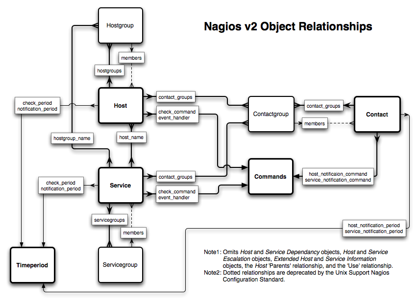
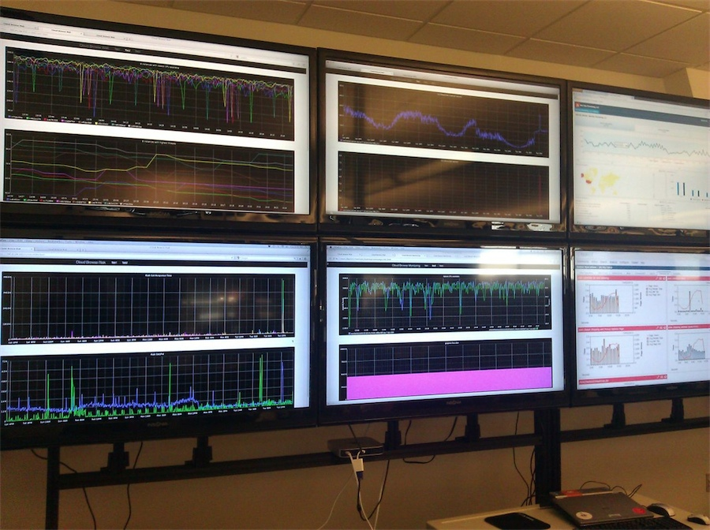

All the Monitoring
Bryan Brandau
@agent462
Sr. Manager of Operations, bestbuy.com
NO
- I'm not here to bash any tool
- I can if you want me to :) ## [I love to troll]
The Goal
An open source monitoring system.
Aims to be simple, malleable, and scalable.
Compose a system - your requirements.
Don't tie yourself to a single monolithic piece of software or service.
Choices
Nagios * Zabbix * Ganglia * Munin * Zenoss * Openmms * OpenTSDB * Icinga * Graylog2 * Hyperic * Diamond * Shinken * Cacti * New Relic * Loggly * Stat Hat * Ops Genie * Twilio * HP Openview
100's of other Enterprise products
Okay, I left out a few but what do we need
- System metrics (CPU, memory, df, iostat, etc)
- Application metrics (error counts, latency, service timings)
- Log files
- Synthetic Monitoring (transactional)
- Rates, aggregates and state
- Graph everything
Revisit the guiding principles
Aims to be simple, malleable, and scalable.
Focus on open source.
Compose a system - your requirements.
Don't tie yourself to a single monolithic piece of software or service.
Sensu
Graphite
Collectd
Logstash
- I lied, slightly.
- if you have $, buy Splunk
Sensu
A monitoring router and framework
Only cares about bad state
VS Information overload

Or this

Check
Outputs data* to STDOUT or STDERR.
Uses exit status to indicate severity.
0: OK
1: WARNING
2: CRITICAL
>= 3: UNKNOWN or CUSTOM
{
"checks": {
"check_disk": {
"command": "check-disk.rb -w 85 -c 95",
"handlers": [
"bby"
],
"standalone": true,
"interval": 30,
"refresh": 1800,
"occurrences": 2
}
}
}{
"checks": {
"chef-process": {
"command": "PATH=$PATH:/usr/lib64/nagios/plugins check_procs -C chef-client -c 1:9",
"handlers": [
"bby"
],
"standalone": true,
"interval": 60,
"refresh": 1800,
"occurrences": 2
}
}
}- Every check result is inspected.
Non-zero exit status?
First zero exit status in a series?
Marked as a metric?
V
Event
Event Data
{
"client": {
"name": "i-c903caf4",
"address": "107.23.172.32",
"subscriptions": [
"web"
],
"platform_version": "6.4",
"chef_version": "11.4.0",
"local_ipv4": "10.2.13.107",
"placement": "us-east-1a",
},
check: {
name: "frontend_http",
command: "check_http -u http://example.com",
subscribers: ["application"],
handlers: ["pagerduty"],
interval: 60,
output: "HTTP/1.1 503 Service Temporarily Unavailable",
status: 2,
history: [0, 2],
flapping: false,
issued: 1364274239,
executed: 1364274240
},
occurrences: 1,
action: "create"
}Handler
Takes action on event data.
Several types: execute a script, open a socket ...
[Pipe, TCP, UDP, AMQP, Set]
{
"handlers": {
"awsdecommission": {
"type": "pipe",
"command": "/etc/sensu/handlers/awsdecomm.rb",
"severities": [
"ok",
"warning",
"critical"
]
}
}
}The good
Keepalives
Compatible with nagios plugins
It can utilize bash, ruby, python, etc (anything)
Deep merging of configuration files
Groups/Sets
Aggregates
Community Plugins

Collectd
[The system statistics collection daemon]
Written in C
Over 90 plugins
Get all your system metrics here
Outputs to graphite
Easy setup
Each plugin can run at different intervals
[bbrandau@ip-10-2-12-10 plugins]# cat memcached.conf
LoadPlugin "memcached"
<Plugin "memcached">
Host "127.0.0.1"
Port "11211"
</Plugin>Graphite
scalable realtime graphing


Time series database (whisper)
Powerful rendering engine
RRD vs Whisper
RRD can not take updates to a time-slot prior to its most recent update
RRD was not designed with irregular updates in mind
Whisper is slower; hundreds of microseconds (10^-4) which means less than a millisecond
Render URL API
http://graphite/render/?width=960&height=505&target=collectd.graphite.i-ac229dw1.cpu-0.cpu-idle
- width=960
- height=505
- target=collectd.graphite.i-ac229dw1.cpu-0.cpu-idle
That's beginner stuff, how about
derivative()
drawAsInfinite()
highestAverage()
holtWintersAberration()
logarithm()
mostDeviant()
100's of ways to manipulate the data and graphs

How do you get data in?
- Open Socket
- echo sensu.instance.checkdisk 1 1364961937
- Close Socket
- Open Socket
- echo sensu.instance.checkdisk 1 1364961937
- Close Socket
Logging
Splunk is the best tool but costs real $ or 500MB per day free
Logstash is a great free alternative
Logstash
Open Source Log Management

[ Ship Logs - Parse - Index - Search ]
Get Kibana
- Search
- Graph
- Score (Trend/Avg/Score)

Logster
Generate metrics from log files
Parse log files but maintains cursor
Graphite, Ganglia or Amazon CloudWatch
Troll your logs
Logs can be the heart and soul of metrics
- This should be your richest source of data
- If not, you're probably doing it wrong
How to log effectively
- Time Formats
- Time formats ISO 8601
- Time at the beginning of the line
- YYYY-MM-DDThh:mm:ss.fffz where fff represents milliseconds
- Unique Identifiers
- Correlate to user
- Include non PII user data
Categorization
- Multiple levels (INFO, WARN, etc)
- Assign priority (P1, P2, etc)
Profiling Data
- Record Timings for Model, View, Controller processing times.
- Record Timings for external dependency calls (API, etc)
- Is host1 processing X in the same amount of time as host2
- Has the render for X increased after this deployment
Log Structure
time=2012-03-05T16:45:01:999Z ip=192.168.1.1, username=bryan.brandau, \
level=info, priority=p3, view="profile parser", \
message="The programmer did something bad"Tie it all together

Dashboards
- Roll your own with all the api's
- Gdash
- Graphene
- Dashboard
- Graphiti
- Tasseo
- many more (search github)


Scale?
What should you monitor
- KPI/CBP
- System Metrics are cheap to collect
- Model/View/Controller timings
- Bounds of your technologies (threads, request counts, JMX)
- GC Events
- Deployments/Change
- Alerts

Other things to look at
- Riemann
- StatsD
- Uptime
- Information Dashboard Design (book)
- Pager Duty
- Watir
- Selenium
We're Hiring
- devops, cloud operations, ops manager, monitoring
- Work with these technologies and more like Chef, Riak, Cassandra, Solr, AWS, Rackspace, etc
Contact
Twitter:
@agent462
Email:
agent462@gmail.com
Github:
https://github.com/agent462
Sensu
- http://sensuapp.org/
- https://github.com/sensu
- https://github.com/sensu/sensu-community-plugins
Collectd
- http://collectd.org/
- http://git.verplant.org/?p=collectd.git;a=summary
Graphite
- http://graphite.readthedocs.org/en/0.9.10/index.html
- https://github.com/graphite-project
Logstash
- http://www.logstash.net/
- https://github.com/logstash
Logster
- https://github.com/etsy/logster